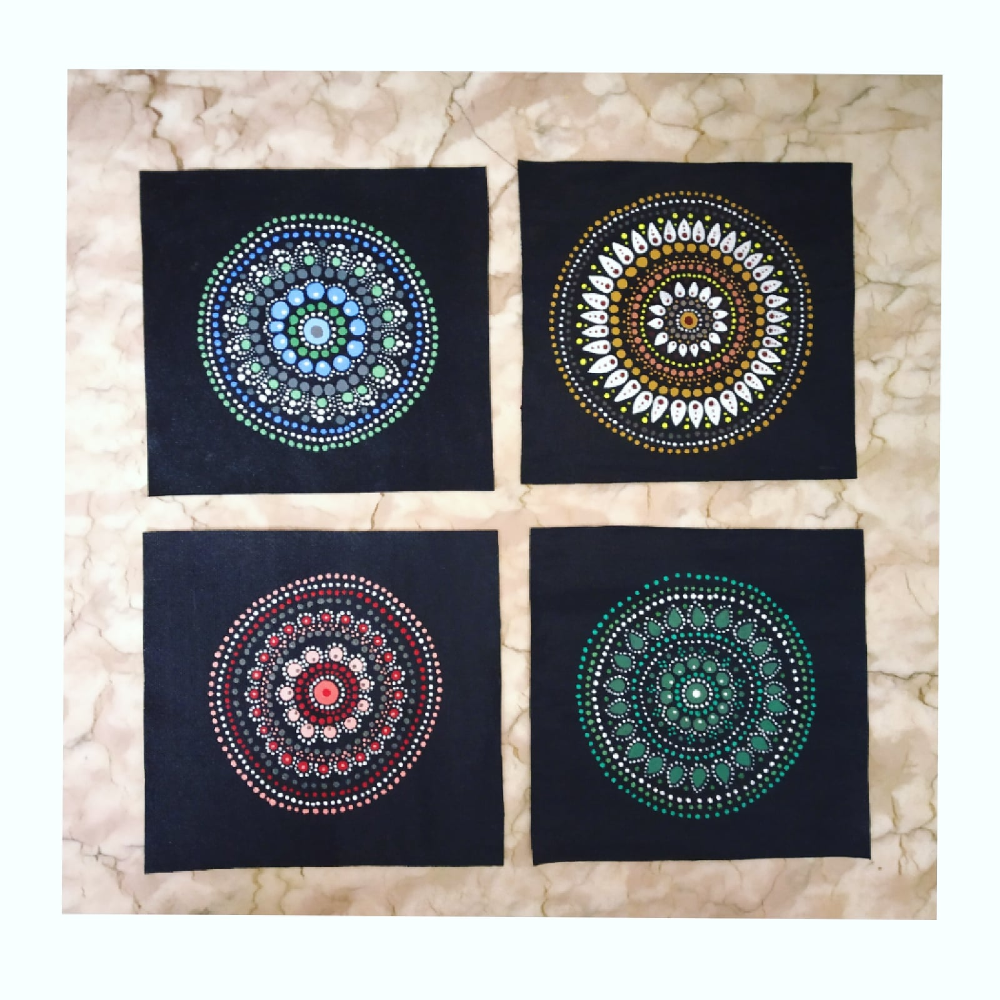

MINI MANDALA'S
In frame are small mandala arts that can be used to put on walls in different styles just as a simple DIY wall decoration.
These mini mandala dot arts don’t occupy much space and at the same time give a very elegant look.
one doesn’t have to spend much for such cute piece’s of art and can be easily made at home and
used in any pattern to decorate the walls. These can be framed with white / brown
frames which would give a much more better look.
Materials Required :
4 Canvas sheet (10*10 inch).
paint brush.
Black chalk paint.
red, green, blue, white, ochre yellow, brown and grey acrylic colors.
Mandala dot art tool set.
Compass.
steps one can follow(if needed) :
First take 4 plain canvas and tape it if you want white border or else you can direct paint it whole black.
LAfter it dries, mark the center point and draw circle using compass.
After all this is done make a grid, the way you want the design to be like.
Then start with the dot art in any pattern you want, if you want you can look in the above painting
take ideas to do the pattern.
After all these 4 mini mandalas are done , they will be ready to go on the wall.